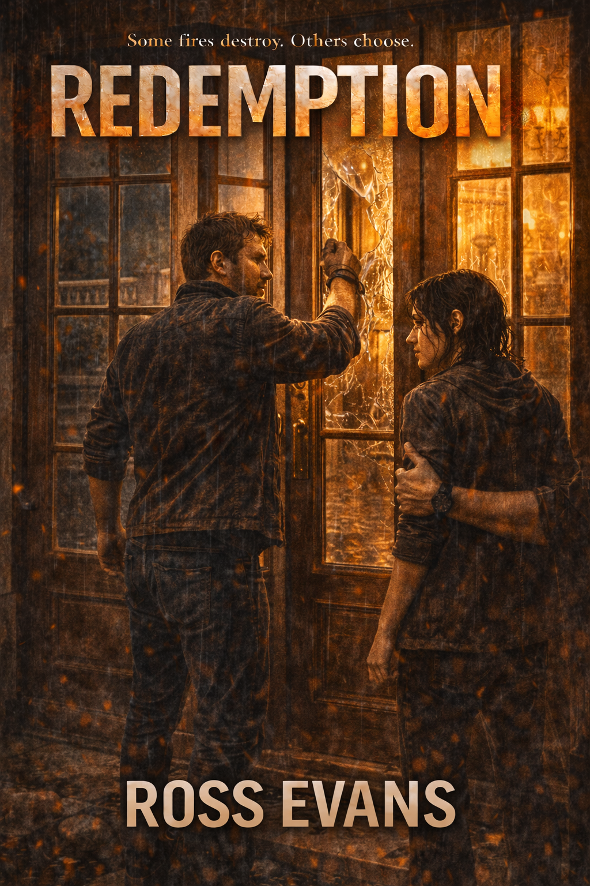

Written by Ross Evans
Redemption — Order-now!
A dark fantasy novel about guilt, power, and the fight for redemption when death is only the beginning.
Latest UpdatesClick anywhere on the page to play the theme for 15 seconds.
PROLOGUE

PROLOGUE
The rain gathered slowly, settling into a steady drizzle that coated the marble in a thin, reflective sheen. Water traced the curves of the staircase and gathered along the edges before slipping free, dripping in quiet, uneven intervals. The house stood open and exposed to it, untouched and pristine, as if nothing had ever gone wrong here.
Freya stood with Steve and Jack at the rear of the house, her eyes fixed on the staircase leading down toward the pool. The white stone held the light in a way that should have felt clean.
It didn’t.
The weight in the air pressed against her chest without explanation. The clouds had swallowed the moon, leaving only a low, suffocating darkness overhead. Rain tapped steadily against the pool, the sound repeating without pause, soft enough to ignore, constant enough that it couldn’t be.
Light spilled from inside through the tall French doors, warm and golden.
Wrong.
“Steve…” Her voice dragged, slow and uneven, like it had to force its way out. “You sure there’s nobody home?”
Jack answered immediately, sharp and irritated. “I already checked. No one’s here.”
Freya didn’t look at him. She kept staring at the lights.
“They wouldn’t just leave everything on,” she said, though the thought didn’t feel fully formed even as she spoke it.
Steve turned, his expression tightening. “Just shut up.”
He reached into his coat and pulled out a small square of foil, tossing it toward her without looking.
It slipped through her fingers and landed in the shallow water at her feet.
Her body reacted before her thoughts caught up.
She dropped immediately, hands pressing against the wet stone as she searched for it, her breathing already quickening. The fading edge of her high left something hollow behind, something that pulled at her from the inside.
She found the foil and opened it with shaking hands. The straw inside was blackened and warped from use, its shape and texture already known to her hands in a way that bypassed thought and went straight to need.
She worked without thinking, bringing the flame beneath the foil and holding it there as the heat built and the smoke began to curl upward toward her.
She inhaled deeply, holding it longer than she should have.
The world softened.
Edges blurred. Sound dulled. The tightness in her chest loosened just enough to breathe through.
Steve’s voice continued somewhere behind her, rising and falling with a frustration she no longer had to carry.
“These people don’t give a damn about anyone but themselves,” he said. “They take everything and leave the rest of us with nothing.”
Jack murmured something in agreement.
Freya let it pass through her.
A hand grabbed her arm.
“Move.”
She let herself be pulled upright, her balance lagging behind the motion. The ground shifted slightly beneath her before settling again.
Jack moved ahead. Steve wrapped his hand and drove his fist through the glass.
The sound cracked through the space.
Freya flinched late.
Steve reached in, unlocked the door, and stepped inside.
She followed.
They had barely entered when the voice came from the stairwell.
“Who are you? What are you doing in my house?”
The words reached her.
They didn’t stay.
Movement followed. Fast. Heavy.
A crash.
A scream.
Something struck the ground hard enough that the vibration carried through her feet.